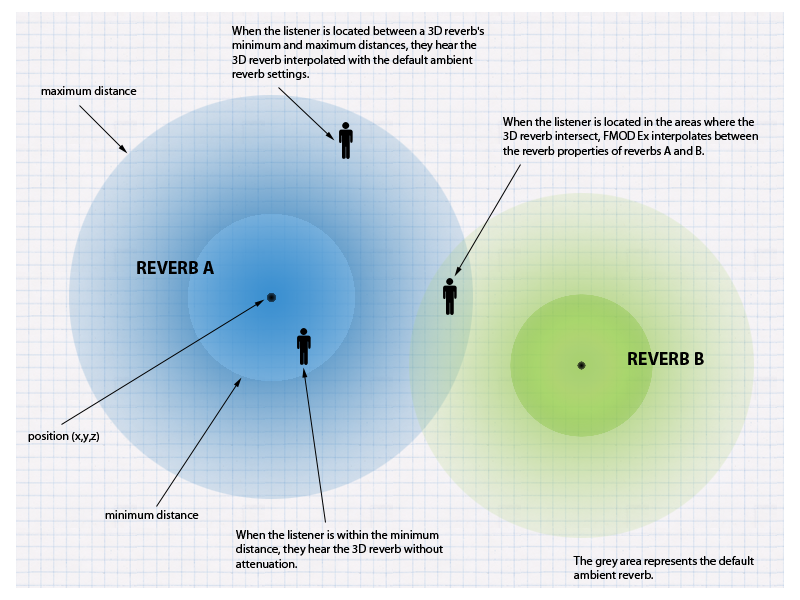

Firelight Technologies FMOD Studio API
It is common for environments to exhibit different reverberation characteristics in different locations. Ideally as the listener moves throughout the virtual environment, the sound of the reverberation should change accordingly. This change in reverberation properties can be modeled in FMOD Studio by using the built in FMOD::Reverb3D API.
The 3D reverb system works by allowing you to place multiple virtual reverbs within the 3D world. Each reverb defines:
At runtime, FMOD Studio interpolates (or morphs) between the characteristics of 3D reverbs according to the listener's proximity and the position and overlap of the reverbs. This method allows FMOD Studio to use a single reverb DSP unit to provide a dynamic reverberation within the 3D world. This process is illustrated in the image below.

When the listener is within the sphere of effect of one or more 3D reverbs, the listener hears a weighted combination of the affecting reverbs. When the listener is outside the coverage of all 3D reverbs, the reverb is not applied. It is important to note that by default, 2D sounds share this same physical reverb instance, so to avoid 2D sounds having reverb, use Channel::setReverbProperties and set wet = 0, or shift the 2D Sounds to a different reverb slot, using the same function (adding a 2nd reverb will incur a small CPU and memory hit).
The interpolation of 3D reverbs is only an estimation of how the multiple reverberations within the environment may sound. In some cases, greater realism is required. In these situations we suggest using multiple physical reverbs as described in the tutorial 'Using multiple reverbs'.
We will now create a virtual reverb, using the call System::createReverb3D, then set the characteristics of the reverb using Reverb3D::setProperties.
FMOD::Reverb3D *reverb;
result = system->createReverb3D(&reverb);
FMOD_REVERB_PROPERTIES prop2 = FMOD_PRESET_CONCERTHALL;
reverb->setProperties(&prop2);
The 3D attributes of the reverb must now be set. The method Reverb3D::set3DAttributes allows us to set the origin position, as well as the area of coverage using the minimum distance and maximum distance.
FMOD_VECTOR pos = { -10.0f, 0.0f, 0.0f };
float mindist = 10.0f;
float maxdist = 20.0f;
reverb->set3DAttributes(&pos, mindist, maxdist);
As the 3D reverb uses the position of the listener in its weighting calculation, we also need to ensure that the location of the listener is set using System::set3dListenerAtrributes.
FMOD_VECTOR listenerpos = { 0.0f, 0.0f, -1.0f };
system->set3DListenerAttributes(0, &listenerpos, 0, 0, 0);